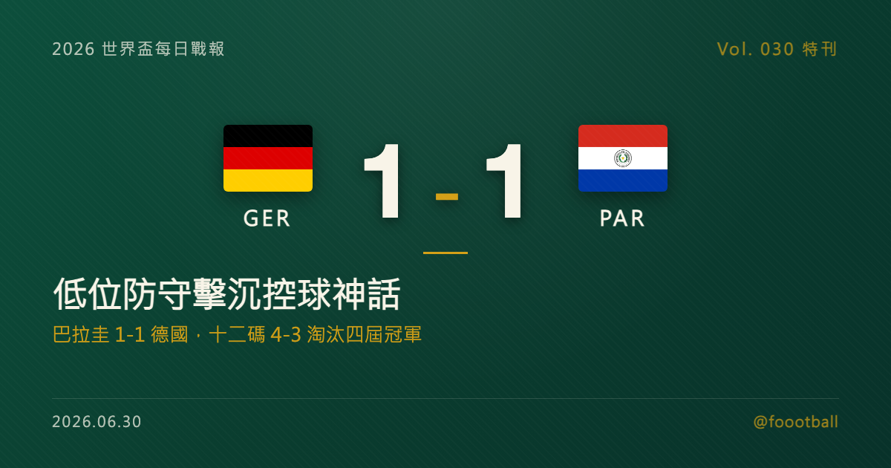

巴拉圭 1-1 德國：十二碼 4-3，低位防守如何擊沉日耳曼控球神話
2026 世界盃 32 強，德國與巴拉圭 120 分鐘踢成 1-1，巴拉圭在十二碼大戰 4-3 勝出。德國長時間控球占優，卻始終難以穿透巴拉圭極窄的 4-5-1 低位防線；巴拉圭靠恩西索第 42 分鐘頭槌領先，德國由哈弗茨扳平，最後在十二碼大戰中倒下。這篇特刊拆解：巴拉圭如何用空間紀律抵消控球，德國為何缺少禁區支點，以及這場爆冷對現代足球防守美學的意義。

2026 世界盃特刊｜Vol. 030 番外
有些冷門，是運氣；有些冷門，是把對方的優勢變成對方的負擔。
巴拉圭 1-1 德國，十二碼 4-3 勝出，屬於後者。
在波士頓近郊的 Gillette Stadium，德國隊掌握了更長時間的球權，創造了更多進攻回合，也在常規時間與加時賽裡長時間把比賽壓在巴拉圭半場。但 120 分鐘結束時，比分仍是 1-1。接著進入十二碼大戰，巴拉圭門將奧蘭多·吉爾（Orlando Gill）站上故事中央，德國三名主罰者失手，巴拉圭 4-3 晉級。
這場球最容易被寫成「德國爆冷出局」或「十二碼神話破滅」。但真正值得拆的，是前面 120 分鐘：巴拉圭用一套極窄、極有紀律的低位區域防守，把德國的控球變成循環，把德國的傳導變成等待，把德國的焦慮一點一點推高。
這不是反足球。這是現代淘汰賽裡，弱勢方最務實、也最殘酷的防守美學。
一、24 年後的重逢：從諾伊維爾，到卡納萊
德國與巴拉圭在世界盃淘汰賽的記憶，繞不開 2002 年。
那年韓日世界盃 16 強，德國與巴拉圭纏鬥到第 88 分鐘，最後由諾伊維爾（Oliver Neuville）攻入致勝球，德國 1-0 晉級。24 年後，兩隊在 2026 世界盃 32 強重逢，劇本像是被倒過來寫了一次：這次輪到巴拉圭把比賽拖到最殘酷的邊緣，最後由替補中衛荷西·卡納萊（José Canale）罰進關鍵十二碼，完成復仇。
背景同樣有戲劇性。德國小組賽火力強大，卻也在最後一輪輸給厄瓜多，暴露出轉換防守不穩的問題；巴拉圭則是以 D 組第三、最佳第三名身分晉級，過程並不華麗，甚至曾在首戰大比分輸給地主美國，但靠後兩場的防守韌性把自己留在淘汰賽裡。
到了淘汰賽，這種韌性變成了武器。
二、巴拉圭的防守不是擺巴士，而是控制走廊
巴拉圭主帥阿爾法羅（Gustavo Alfaro）的核心選擇很清楚：放掉德國部分外圍控球，守住中路與半空間。
在 4-5-1 的防守結構下，巴拉圭兩條防線壓得非常窄，尤其重點封住德國最想讓維爾茨（Florian Wirtz）與穆西亞拉（Jamal Musiala）接球轉身的區域。這種防守不是每個人盯死每個人，而是用區域、距離與橫移，讓德國每一次中路接球都變得不舒服。
德國可以在中後場傳球，可以把球轉到邊路，也可以在外圍重新組織。但一旦球要進入禁區前沿，巴拉圭就會收縮：一人上前壓迫，身後兩到三人補位，弱側保持足夠距離，防止直塞穿過。德國因此陷入一種典型的控球困局：球權在自己腳下，空間卻在對手手裡。
這就是低位區域防守的成熟版本。它不追求把每一次傳球都搶下來，而是持續把對手導向低效率位置。只要德國沒有穩定的禁區支點、沒有足夠高品質的邊路一對一，控球率再高，也會變成看似主動、實則被牽引。
三、恩西索的頭槌：巴拉圭只需要一次轉換
巴拉圭上半場真正威脅不多，但淘汰賽裡，一次就夠。
第 42 分鐘，德國在中路進攻受阻後丟掉球權，巴拉圭迅速把球送往右側。阿爾米隆（Miguel Almirón）前插牽制防線，後續傳中送到禁區中央，恩西索（Julio Enciso）在防守空檔裡完成頭槌破門，巴拉圭 1-0 領先。
這顆球對德國的傷害不只在比分，而在心理。因為它把德國整場最怕的劇本提前寫出來：你可以圍攻 40 分鐘，但我只要一次轉換，就能讓你全部重來。
德國這幾年常見的問題，在這顆球裡被濃縮。當邊後衛與中場壓得太高，一旦反搶沒有立刻成功，中衛就必須面對很大的橫向防守範圍；而禁區內最後一段盯人，又容易在回追與補位之間產生責任空隙。恩西索的頭槌，正是利用了這個瞬間。
四、哈弗茨扳平，但德國沒有真正解開題目
下半場德國扳平比分，靠的是一次更直接的禁區攻擊。
第 54 分鐘，維爾茨從右路送出斜傳，哈弗茨（Kai Havertz）在門前完成高難度頭槌，把比分改成 1-1。這顆球證明，德國不是完全沒有解法。當他們能把球快速送進禁區、讓前場球員在防線身後搶到第一點，巴拉圭防線仍然會被撕開。
問題是，這種回合沒有被德國穩定複製。
扳平後，德國重新掌握場面，卻又回到大量外圍傳導與邊路再組織。巴拉圭則更明確地把比賽帶向延長賽與十二碼：不急著搶球，不貿然壓出，先保住中路密度，再把每一次清球、每一次犯規、每一次死球，都變成消耗德國節奏的工具。
這裡暴露出德國的結構性問題：他們有優秀的技術型中場，也有能回撤串聯的前鋒，但面對極端密集防守時，缺少一個能在禁區中央持續吸引兩名中衛、強行爭頂、把半機會變成二點球混戰的傳統支點。當哈弗茨拉出來參與組織，禁區裡就少了最能製造身體壓迫的人；當他留在禁區，德國中路連線又少一個接應點。這不是單一球員的責任，而是陣容結構本身的兩難。
五、VAR 取消進球：德國心理線開始斷裂
加時賽第 102 分鐘，德國一度以為自己完成反超。
角球攻勢中，約納坦·塔（Jonathan Tah）把球頂進網內，德國球員開始慶祝。但經 VAR 介入後，主裁判認定德國進攻球員干擾巴拉圭門將吉爾，進球被取消；這次判決賽後仍有爭議，但在比賽語境裡，它成了德國心理線斷裂的節點。
這一球是全場心理節點。對德國而言，那是最接近「終於解決問題」的一刻；被取消後，比賽重新回到 1-1，而時間、體能與耐性都站在巴拉圭那邊。德國之後仍然有攻勢，但攻勢裡的冷靜感下降，更多是把球送進禁區、期待混戰裡出現答案。
巴拉圭等的就是這個。低位防守最怕的是對手耐心地、精準地、一次次把防線拉開；最喜歡的是對手開始急，開始傳一些不夠乾淨的球，開始把進攻變成情緒輸出。加時賽後段，德國越急，巴拉圭越接近自己的目標。
六、十二碼：吉爾的歷史之夜
120 分鐘結束，巴拉圭把比賽帶進十二碼大戰。
對德國來說，這原本應該是熟悉的舞台。德國男足在世界盃十二碼大戰歷史上長期被視為最穩定的球隊之一；但這一次，穩定站到了另一邊。
26 歲的奧蘭多·吉爾成了主角。可確認的是，哈弗茨與尼克·沃爾特馬德（Nick Woltemade）的主罰都未能越過吉爾這一關；德國最後一輪由塔主罰未能命中。巴拉圭雖然也有兩次罰失，但第六輪由卡納萊罰進關鍵球，4-3 結束十二碼大戰。
這不是只有門將神勇。十二碼大戰常被說成運氣，但它往往是前 120 分鐘情緒累積的結果。德國在控球、VAR、加時錯失與對手拖延之中，心理成本越堆越高；巴拉圭則是越守越相信自己有機會。到了十二碼點上，兩隊承受的壓力不是同一種壓力。
德國是在「不能輸」的重量下主罰。巴拉圭是在「我們已經把你拖到這裡」的信念下主罰。差別就在這裡。
七、這場比賽告訴現代足球什麼？
巴拉圭淘汰德國，不代表控球足球失效，也不代表低位防守永遠正確。它真正說明的是：現代足球的權力，不再只屬於有球的一方。
過去很多人談「主導比賽」，會直接看控球率、傳球數與場面壓制。但現在更精確的問題應該是：誰控制了高價值空間？誰控制了轉換瞬間？誰控制了對手最想進入的走廊？
這場比賽裡，德國控制了球，巴拉圭控制了空間。德國控制了回合數，巴拉圭控制了回合品質。德國把比賽推向巴拉圭半場，巴拉圭則把德國推向自己不擅長的攻擊方式。
低位防守的劣勢仍然明顯：它消耗體能，犧牲進攻，長時間承受壓力，也可能因一次折射、一次定位球、一次禁區內犯規而崩盤。但在單場淘汰賽裡，只要紀律足夠、門將夠穩、反擊能抓住一次，它就能把強隊的優勢變成焦慮。
巴拉圭做到了。德國沒有找到足夠多的答案。
八、德國的後續問題：不是輸在一場，而是輸在結構
德國出局後，最容易被討論的是十二碼失手。但如果只把問題停在十二碼，反而會錯過真正的警訊。
這場球暴露的，是德國近年在大賽淘汰賽裡反覆遇到的結構問題：技術型中場很多，禁區支點不足；能掌控節奏的人很多，能在混戰裡強行改變落點的人不夠；高位壓迫時看起來主動，一旦反搶失敗，後場面對轉換的保護又不夠乾淨。
這些問題不會因為換一兩名球員就自然消失。它牽涉到青訓、選材、戰術偏好與國家隊短期賽制的取捨。德國不一定要回到過去那種純力量足球，但他們必須重新找回一件事：當技術優勢打不開局面時，還有沒有第二種更直接、更身體化、更能在禁區裡製造混亂的勝利方式？
巴拉圭給了德國一個殘酷答案。你可以有球，但如果不能把球送進真正危險的位置，控球就只是一種等待。你可以壓著對手，但如果每一次壓迫後都害怕被反擊，主動權就沒有看起來那麼牢。
巴拉圭晉級 16 強，將面對法國與瑞典之間的勝者。下一輪，他們未必能複製同樣劇本；低位防守的體能成本與運氣成分，永遠存在。但至少在這一夜，他們把一支傳統強權拉進自己的比賽，並在那裡贏了。
這就是淘汰賽最殘酷、也最迷人的地方：不是誰看起來更像強隊，誰就一定能活下來。真正活下來的，是能把 120 分鐘變成自己想要的形狀的球隊。
常見問題
德國對巴拉圭最後比分是多少？
120 分鐘後德國 1-1 巴拉圭，巴拉圭在十二碼大戰 4-3 勝出，晉級 16 強。
巴拉圭是怎麼限制德國的？
巴拉圭採取極窄的 4-5-1 低位區域防守，讓德國可以在外圍控球，但封住中路與半空間的接球轉身區域。德國因此長時間控球，卻很難把球送進真正高價值的禁區位置。
這場為什麼被視為德國的結構性警訊？
因為問題不只是十二碼失手。德國面對密集防守時缺少穩定禁區支點，邊路傳中與中路滲透都難以持續製造高品質機會；同時高位壓上後又暴露轉換防守風險。這些都是陣容結構與戰術路線層面的問題。
巴拉圭下一輪會對誰？
巴拉圭作為 Match 74 勝者，16 強將對上 Match 77 的勝者，也就是法國與瑞典之間的勝隊。
資料來源與 Tags
Tags：世界盃, 2026世界盃, 德國, 巴拉圭, 十二碼, 奧蘭多吉爾, 防守戰術
資料來源：FIFA 賽事資料、Fox Sports、Al Jazeera、CBC Sports、Olympics.com、Channel NewsAsia、Cadena SER 與本專案 fixtures/knockout.json 賽果資料交叉核對。德國控球率、射門數、球員評分與十二碼逐輪順序在各資料源可能有口徑差異，本文僅採用多源一致的核心事實：1-1、巴拉圭十二碼 4-3 晉級、恩西索與哈弗茨為常規時間進球者、吉爾在十二碼大戰中影響關鍵主罰、卡納萊罰進決勝球。